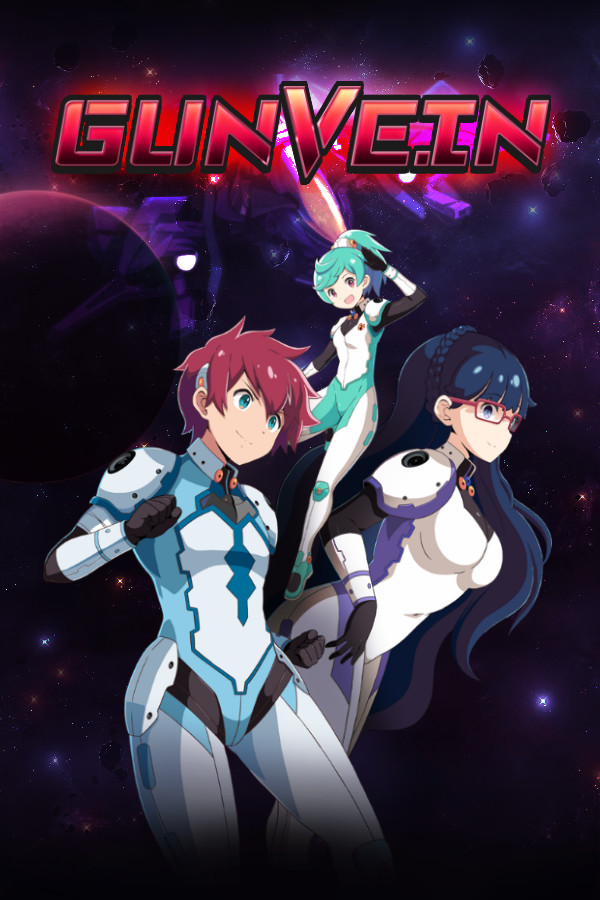
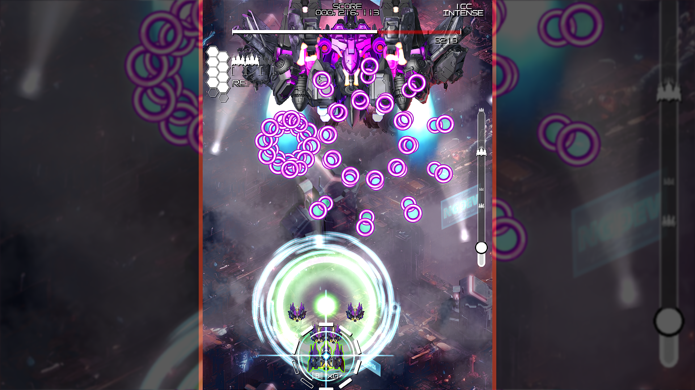
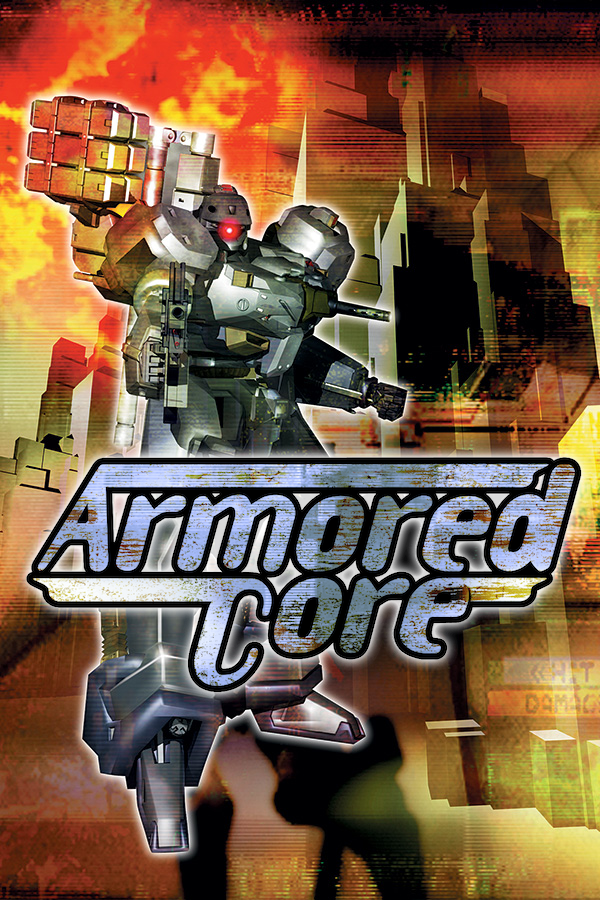
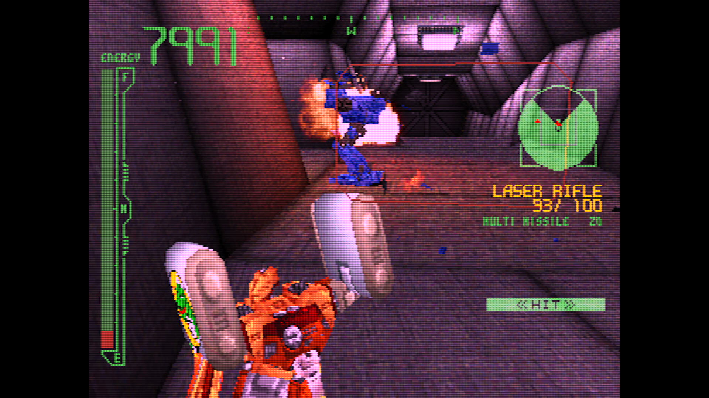
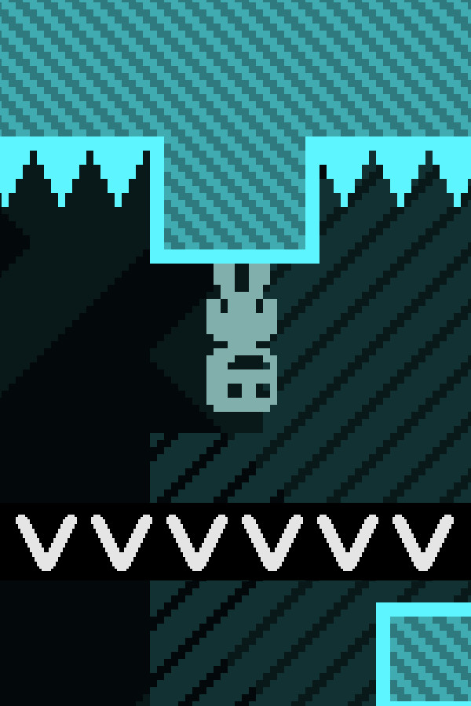
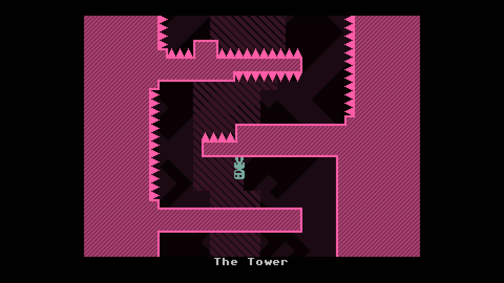
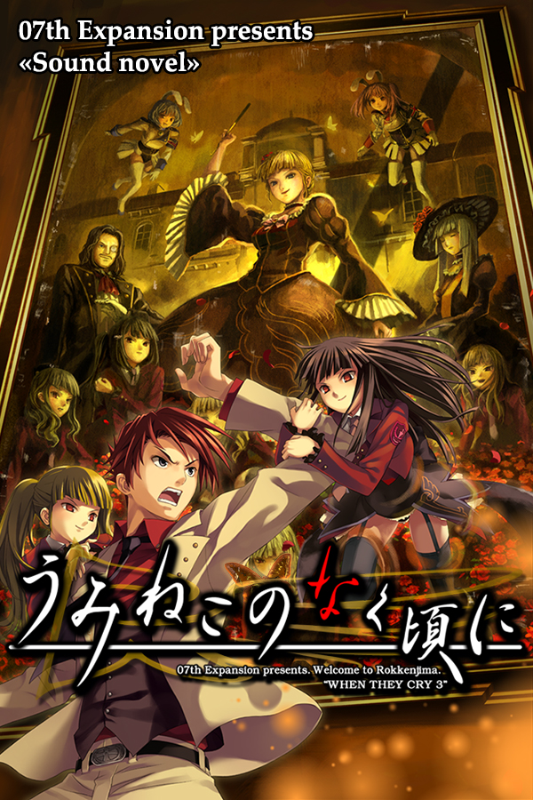
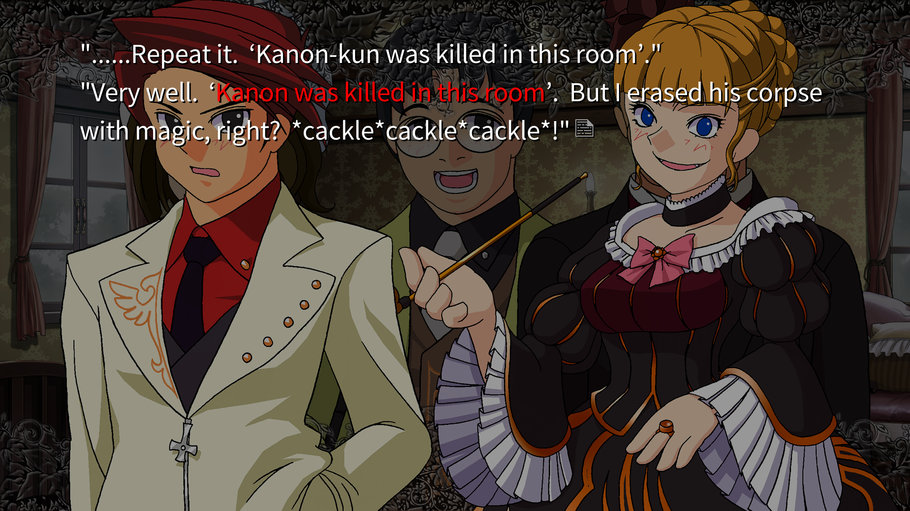
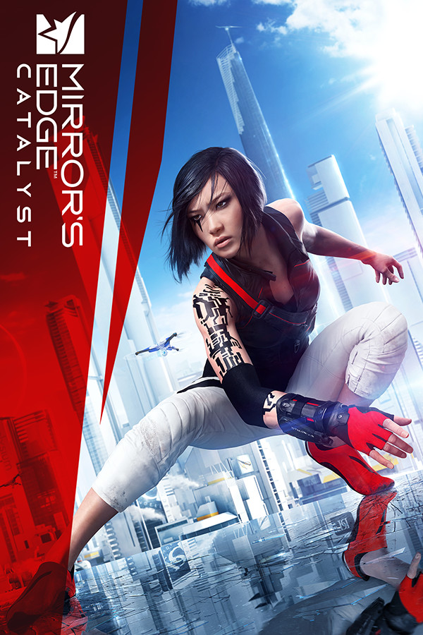
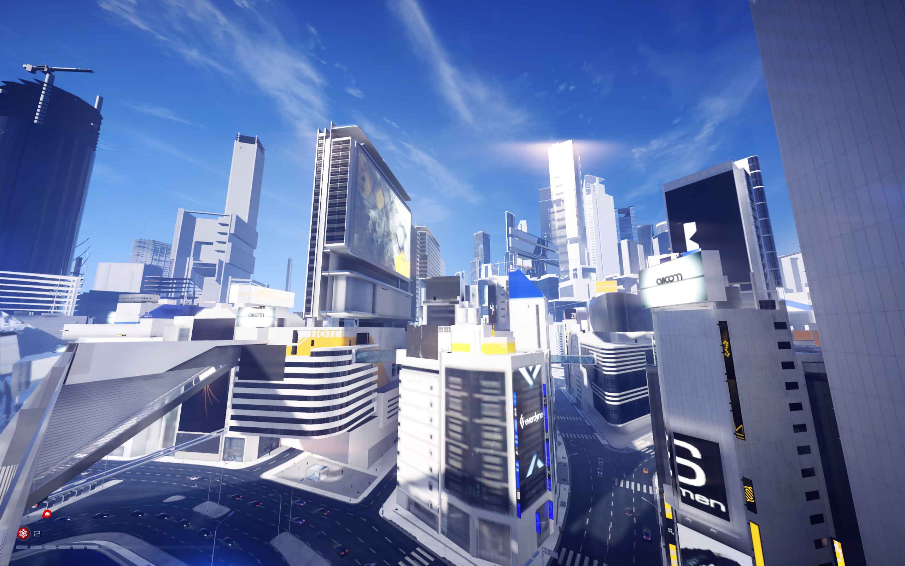

Best Video Games I Played in 2023-2026
Table of Contents
Gunvein
Screenshot


About
Gunvein is a fast-paced shoot-em-up from 2022. It is inspired by other shoot-em-ups made by CAVE, but it has many original elements of its own that makes it unique. Gunvein is an arcade-style game where you have 3 chances to survive until you get a game over. You can get bombs quickly by defeating enemies and use them on bosses to get extra points and extra lives. Gunvein is very hard, and I have not beaten it yet.
Armored Core
Screenshot


About
Armored Core is an action game from 1997 where you build a mecha and become a hired mercenary for many different powerful companies. It is unlike anything I have played before so I was very interested in this game. Your mecha is very hard to control, but it is very mobile when you get the hang of it. I had a lot of fun flying through tunnels avoiding missiles from other big robots.
VVVVVV
Screenshot


About
VVVVVV is a 2D platformer from 2010 with a twist. Instead of being able to jump, your character can only invert gravity instead. This makes for a challenging puzzle game where you have to figure out how to go through sections without jumping. The music for this game is also fantastic.
Umineko
Screenshot


About
Umineko: When the Seagulls Cry is a visual novel series. There is no gameplay, only reading and watching the story unfold. Umineko is a murder mystery taking place on a remote island in Japan, inspired by And Then There Were None by Agatha Christie. The story starts off with a family gathering that gets messy after many arguments about the inheritance of the dying head of the family, and then each member gets murdered one by one. In each new chapter of the visual novel, the story resets and the murders are slightly different, but the culprit is the same.
Mirror's Edge Catalyst
Screenshot


About
Mirror's Edge Catalyst is a parkour game from 2016. This is a sequel to Mirror's Edge, which I enjoyed very much. Mirror's Edge Catalyst takes place in a city, and the main character runs across the rooftops fleeing from surveillance. The running in this game feels very fluid. You can run at full speed throughout the city while dodging obstacles.
Ratings
| Game | Rating |
|---|---|
| Gunvein | 9/10 |
| Armored Core | 8/10 |
| VVVVVV | 8/10 |
| Umineko: When the Seagulls Cry | 10/10 |
| Mirror's Edge Catalyst | 7/10 |